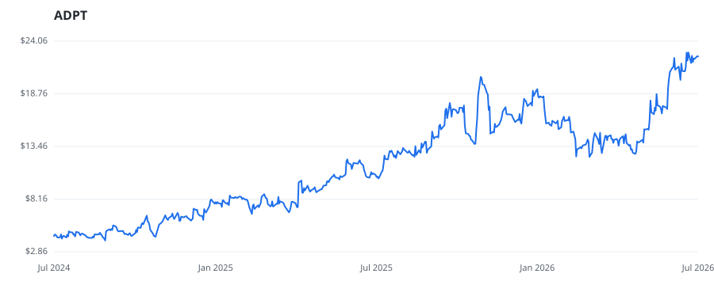

bullish · bearish · n/a — dots: price>SMA10 · SMA10>SMA50 · SMA50>SMA200 · up>down volume (20d)
Pharmaceuticals & Biotech · mid cap

Adaptive Biotechnologies Corp is a company advancing the field of immune-driven medicine by harnessing the inherent biology of the adaptive immune system to transform the diagnosis and treatment of disease. Its clinical diagnostic product, clonoSEQ, is a test authorized by the FDA for the detection and monitoring of minimal residual disease (MRD) in patients with multiple myeloma (MM), B cell acute lymphoblastic leukemia (ALL) and chronic lymphocytic leukemia (CLL) and is also available as a CLIA-validated laboratory developed test (LDT) for patients with other lymphoid cancers. The company ha BIOLOGICAL PRODUCTS, (NO DIAGNOSTIC SUBSTANCES) · website
| Revenue | $277.0M | Net income | $-59.5M |
|---|---|---|---|
| Operating income | $-57.1M | Diluted EPS | $-0.39 |
| Assets | $512.7M | Equity | $225.0M |
This name produced 0.2% of the ranked funds’ total alpha.
| Fund | Fund alpha vs SPY | Position | % of book |
|---|---|---|---|
| VIKING GLOBAL INVESTORS LP | +4% | $487M | 1.3% |
| Blue Water Life Science Advisors, LP | +199% | $14M | 11.2% |
| Bouvel Investment Partners, LLC | +5% | $1M | 0.2% |
Hedge data: SEC EDGAR 13F · ranked funds beat SPY in >50% of their quarters · fund alpha = mirror-portfolio return minus SPY.